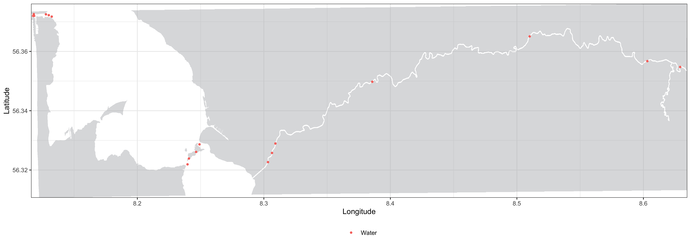

vignettes/a-1_Preparing_the_data.Rmd
a-1_Preparing_the_data.RmdIt is important to clarify the distinction between receivers and stations. For the purpose of this manual (and RSP in general), a receiver is the actual hydrophone that recorded a detection, while a station is the geographical position where that receiver was placed at the time of recording. Therefore, when referring to tag movements, we will always refer to them as movements between stations (because the receivers placed at a station can vary throughout the study period). Receivers are referred to by their serial numbers, while stations are referred to by their standard names. A station’s standard name can be found in the spatial data frame (it is essentially the station’s row number). We use standard names rather than the names provided by the user to avoid complications during the analysis.
Analysing acoustic telemetry data requires initial filtering to exclude misleading data (e.g. false detections, detections prior to release). To overcome this issue and ensure reliable results, the RSP tool-kit operates in close relationship with the actel R package, which filters and invalidates flawed detections. Before getting started with RSP, you will have to download actel and filter your acoustic data.
To start using RSP, you can run the simplest actel analysis with the
function explore. You can find more about how to organize
your data and run this preliminary analysis in actel’s manual pages (run
browseVignettes('actel') after loading the library).
It is important that you save the output of the actel function, so you can later on use it in RSP. e.g.:
library(actel)
filtered_data <- explore(tz = "Europe/Copenhagen")To recreate the shortest in-water paths of tracked animals, RSP needs
a transition layer from your study area. You may
already have a transition layer calculated for your study area, or you
can use actel again to do so. First, you need to load a
shapefile (.shp) from your study area
delimiting the land contours using
loadShape(). This function automatically imports your
shapefile and converts it to a raster, and the corresponding pixel size
must be set using the size argument (refer to actel’s
documentation for more details). After loading your shapefile, you need
to create your transition layer using transitionLayer().
You can choose a number of directions for distance
calculations (again, refer to actel’s documentation for more
details).
water.shape <- loadShape(shape = "my_study_area.shp", size = 0.0001)
water.transition <- transitionLayer(water.shape, directions = 16)Please have in mind that both the transition layer and the base raster (your imported shapefile) will be required during the RSP analysis. RSP currently accepts shapefiles in both metric and geographic coordinate reference systems.
Depending on the shapefile provided from your study area, the pixel
size used and the locations of your stations (provided earlier in the
spatial dataset for actel), it may be that your stations could end up in
land during analysis. This will cause the RSP analysis to return
erroneous results, such as animal tracks crossing extensively through
land. To avoid this issue, you can use the plotRaster()
function to test the quality of the input coordinates:
plotRaster(input = filtered_data, base.raster = water.shape, coord.x = "Longitude", coord.y = "Latitude")coord.x and coord.y must be the column names
containing the coordinates in the spatial data frame.

If you get a plot similar to this one, with only Water showing up in the legend, it means that all your stations are placed in the water and you are all good to continue. If any stations are in land, they will be coloured differently in this plot. If this happens, you must then either adjust your shapefile or the station positions in the spatial dataset before continuing.